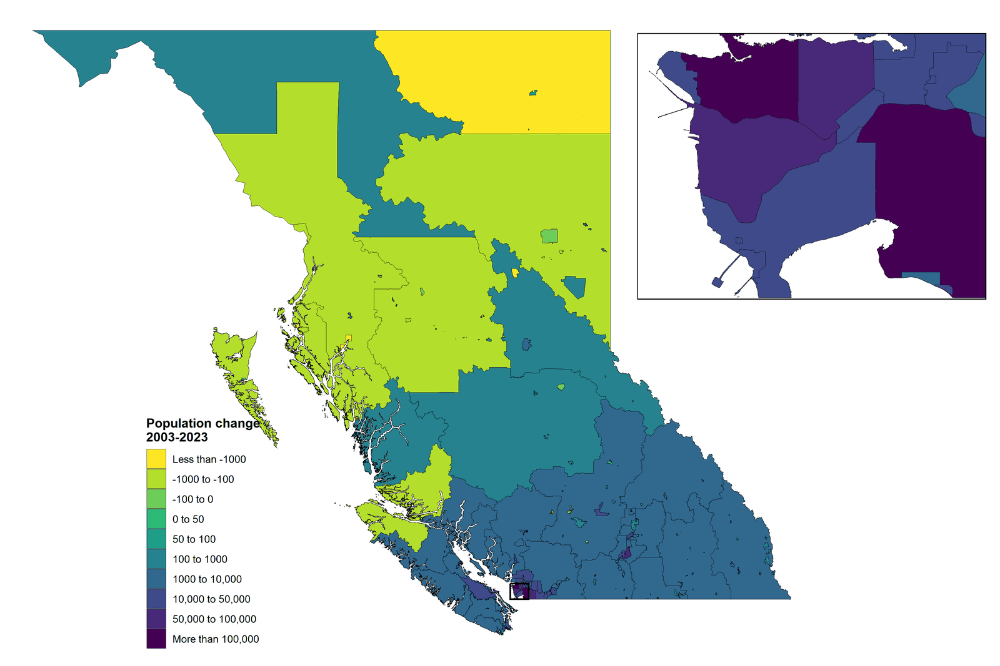
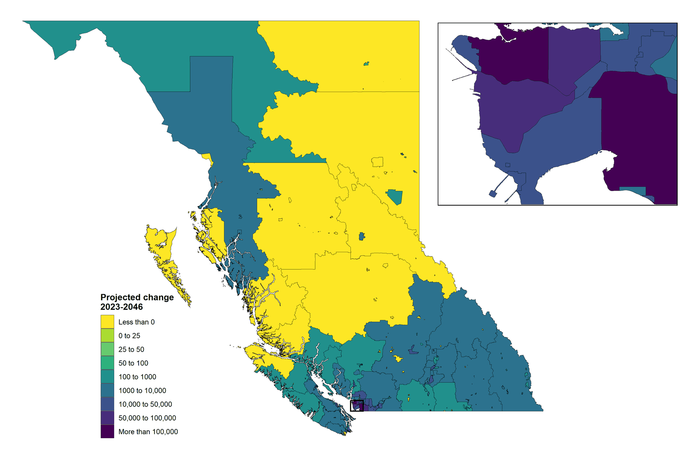

Population change in BC municipalities
Maps of absolute population change across British Columbia's municipalities: estimated change from 2003 to 2023, and projected change from 2023 to 2046. Each map has an inset on Metro Vancouver, where most of the growth is.


How it was made
The script downloads the BC Sub-Provincial Population Estimates and Projections for municipalities (census subdivisions) and takes boundaries from the bcmaps package (2021 census subdivisions, clipped to the coastline).
Areas outside municipalities are published as one "Unincorporated Areas" total per regional district, so the script merges those census subdivisions into one polygon per regional district before joining the data to the map.
Made in R with sf, bcmaps, ggplot2 and cowplot; code under the MIT licence.
Data
Contains information licensed under the Open Government Licence - British Columbia.